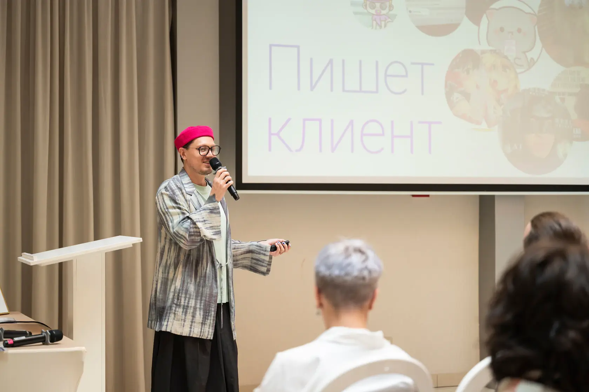
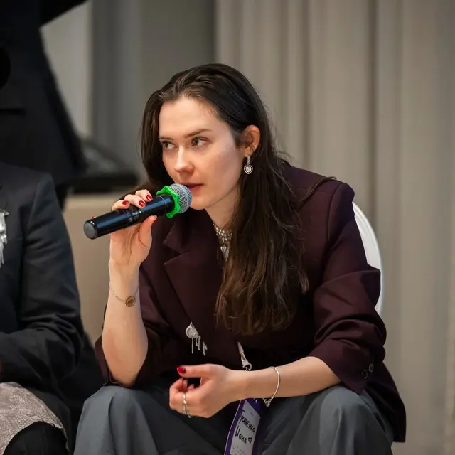

Вуз даёт теорию,
а не практику
Вы знаете теории личности, но пока не знаете, что делать на первой сессии и как вести клиента.
Студенческая конференция 2.0 — о первых клиентах, выборе метода и своём пути в психологии.
Зарегистрироваться бесплатно
21 ноября 2026
Онлайн в Zoom
Участие в эфире бесплатное
Эта конференция для вас, если между учёбой и работой с клиентами пока больше вопросов, чем ответов.
Узнать, с чего начатьОтметьте вопросы, которые сейчас важны вам
Вы знаете теории личности, но пока не знаете, что делать на первой сессии и как вести клиента.
Выбор школ огромный. Без ориентиров легко потратить годы на изучение подхода без научной базы.
Психологов, школ и экспертного контента стало больше. Начинающему сложнее выделиться и найти первых клиентов.
Обучение, супервизия, первые клиенты: без плана путь в профессию занимает дольше, чем мог бы.
Карта
психологических
подходов
Ваш первый ориентир — сразу после регистрации
Мини-гид по психологическим подходам. С ним легче ориентироваться в названиях и подготовить свои вопросы к конференции.
Видеоурок «Как провести первую сессию» — чтобы перейти от общих ориентиров к конкретному разговору с клиентом.
Демо-бонус · содержание и условия уточняютсяПрактикующие психологи, клиники и профессиональные ассоциации расскажут, как на самом деле выглядит переход от учёбы к работе с клиентами.


Клинический психолог, КПТ- и схема-терапевт. Директор по развитию АСП.
Откроет конференцию разговором о том, с чего начинать путь в психологии в 2026 году.
Продолжаем знакомить вас с экспертами. Состав спикеров и партнёров будет пополняться.
Три трека — выбирайте то, что сейчас важно вам. Между залами можно переходить в любой момент.
21 ноября / ZoomИона Гусаченко · АСП
Приглашённого спикера объявим скоро
Для студентов старших курсов и начинающих специалистов
Сравним рабочие условия, задачи и возможности разных форматов. Разберёмся, на что ориентироваться при выборе первого места работы.
Обсудим первые шаги в поиске клиентов и вопросы, которые возникают при назначении цены за сессию.
Разберём, какую поддержку дают эти форматы и на что обратить внимание при выборе супервизора.
Поговорим о профессиональном присутствии в соцсетях, этике и границах публичности психолога.
Для тех, кто определился с профессией и хочет углубиться
Познакомимся с направлениями и вопросами об их научной основе. Обсудим, как ориентироваться в многообразии методов.
Разберём, что учитывать при выборе обучения: от интересующих запросов до содержания программы и практической подготовки.
Посмотрим на разные направления практики и подготовку, которая нужна для работы с конкретными запросами.
Сопоставим профессиональные задачи и границы компетенций. Обсудим место клинических знаний в работе консультанта.
Для выпускников педагогики, социологии, философии и медицины
Разберём возможности и ограничения переподготовки, а также вопросы, которые стоит задать до начала обучения.
Посмотрим на уже накопленные навыки и на то, чему предстоит научиться для работы психологом.
Участники поделятся опытом смены профессии: как совмещали обучение с работой и делали первые шаги в практике.
Обсудим основные этапы подготовки и затраты, которые важно учитывать, планируя переход в психологию.
Разговор о профессиональном пути, ответы на вопросы и специальное предложение для студентов. Состав участников финала объявим позже.
Финальные названия выступлений и подробности появятся после согласования со спикерами. Список тем будет пополняться.
участников в эфире
вузов у участников
спикеров-практиков
Большое спасибо! Это было очень интересно и познавательно, теперь есть небольшое понимание разных подходов и направлений и стало чуть легче определиться, с чего начать)
Самое полезное — услышать, как практикующие психологи начинали работать. Стало понятнее, какие шаги можно сделать уже во время учёбы.Демо-текст · заменим реальным отзывом
Пришла с вопросом, можно ли сменить профессию. Ушла с пониманием того, что нужно изучить и на что обратить внимание при выборе обучения.Демо-текст · заменим реальным отзывом
Участники из разных городов
Встречаемся онлайн в Zoom.
Выберите, как вам удобнее участвовать.
Участие в эфире бесплатное, записи — платные.
Карта подходов придёт сразу после регистрации.
Выберите мессенджер. Здесь вы получите карту подходов и ссылки на залы конференции.
Это просмотр сценария. Боты будут подключены перед запуском регистрации.
Нет. Трек «Путь с нуля» сделан для тех, кто приходит из других профессий.
Можно, хотя основная программа рассчитана на третий курс и старше.
Да, в любой момент. Ссылки на все залы придут в мессенджер утром 21 ноября.
Да. Электронный сертификат доступен для тарифа с записями.
Компьютер или телефон с Zoom и стабильный интернет.